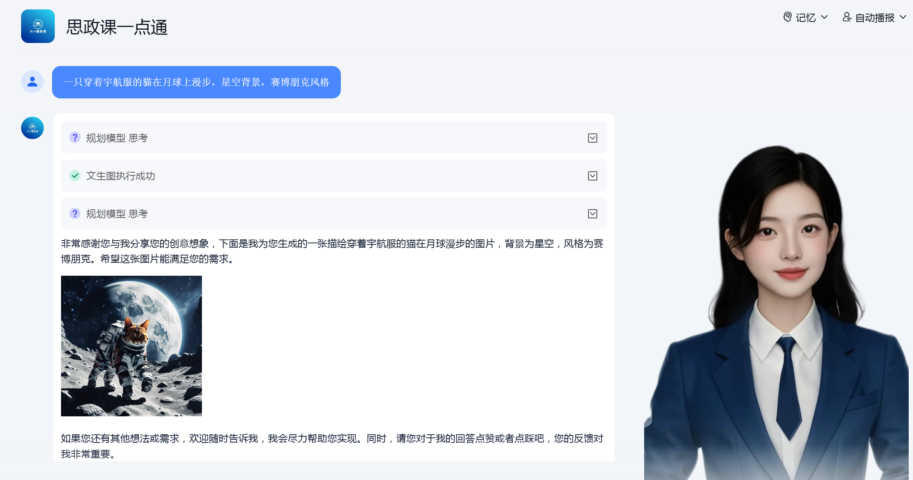

文生图（Text2Image）
将文本描述转换为对应风格的图像。
示例提示词：
一只穿着宇航服的猫在月球上漫步，星空背景，赛博朋克风格。

↑ 根据提示词生成的图片示例
通用文字识别-高精度版（GeneralOCR）
高精度识别图片/扫描件中的文字，支持古籍、表格等复杂排版。
示例提示词：
识别这张古籍扫描页中的繁体文字，输出为可编辑文本。
长文档内容理解（LongDocUnder）
自动分析超长文档（如论文、报告），提取核心论点和结论。
示例提示词：
总结这份50页的科研论文，提取核心论点与实验结论。
图像内容理解（ImageUnderstan）
识别图像中的物体类别、场景状态及关键活动信息。
示例提示词：
分析这张城市街景照片中的物体类别、天气状态及主要活动。
指令生成PPT（PPTGenerationf）
根据用户提供的主题或指令，自动生成包含图表和案例的PPT大纲。
示例提示词：
根据"人工智能发展趋势"主题，生成包含数据图表和案例的10页PPT大纲。
文件生成PPT（PPTGenerationf）
将文档（如报告、论文）直接转换为分章节的PPT，保留图表和结构。
示例提示词：
将这篇市场分析报告自动转换为分章节的PPT，每页配一张图表。
思维导图生成（TreeMind）
基于关键词或主题，自动生成层级清晰的思维导图。
示例提示词：
生成"碳中和实施路径"的思维导图，包含政策、技术、挑战三级分支。
文档格式转换
将PDF、扫描件等文档转换为Word/Excel等格式，保留原始排版。
示例提示词：
将PDF版合同转换为Word文档，保留原有排版和表格。
文档矫正增强（DocCropEnhance）
自动矫正倾斜、模糊的扫描文档，提升文字清晰度。
示例提示词：
矫正这张倾斜拍摄的A4纸文档，增强文字清晰度并去除阴影。
网页内容总结（WebSummary）
快速提取网页内容的核心要点，标注关键人物和事件。
示例提示词：
提取这篇新闻网页的要点，限300字内，标注关键人物与事件。
网页信息提取（WebPilot）
访问指定网页并提取特定信息（如评论、数据）。
示例提示词：
访问知乎"AI未来趋势"话题页，提取点赞最高的10条评论。
表格文字识别（TableOCR）
识别图片/扫描件中的表格数据，输出为可编辑的Excel文件。
示例提示词：
识别扫描版财务报表中的表格数据，输出为Excel可编辑格式。
手写文字识别（HandwriteOCR）
将手写笔记转换为结构化文本，保留序号和重点标记。
示例提示词：
将这张手写会议笔记转换为结构化文本，保留序号和重点标注。
论文生成PPT（PPTGenerationF）
将论文摘要、图表自动生成学术汇报PPT模板。
示例提示词：
将我的毕业论文摘要和图表自动生成学术汇报PPT模板。
Arxiv
搜索并整理Arxiv平台上的学术论文，支持按时间、引用量排序。
示例提示词：
搜索2023年关于"大语言模型伦理"的最新论文，按引用量排序。
创意图片生成（iRAG）
根据文本描述生成概念设计图或创意图像。
示例提示词：
生成一组"未来城市交通"的概念设计图，包含悬浮汽车与立体道路。
AI搜索
用自然语言提问，直接获取精准搜索结果（如代码教程、技术解答）。
示例提示词：
"如何用Python实现图像风格迁移？"
文生视频（TextToVideo）
根据文本剧本自动生成动画或视频片段。
示例提示词：
根据剧本生成30秒动画视频：机器人园丁在火星上培育发光植物。
↑ 根据提示词生成的视频示例
↑ 根据提示词生成的视频示例